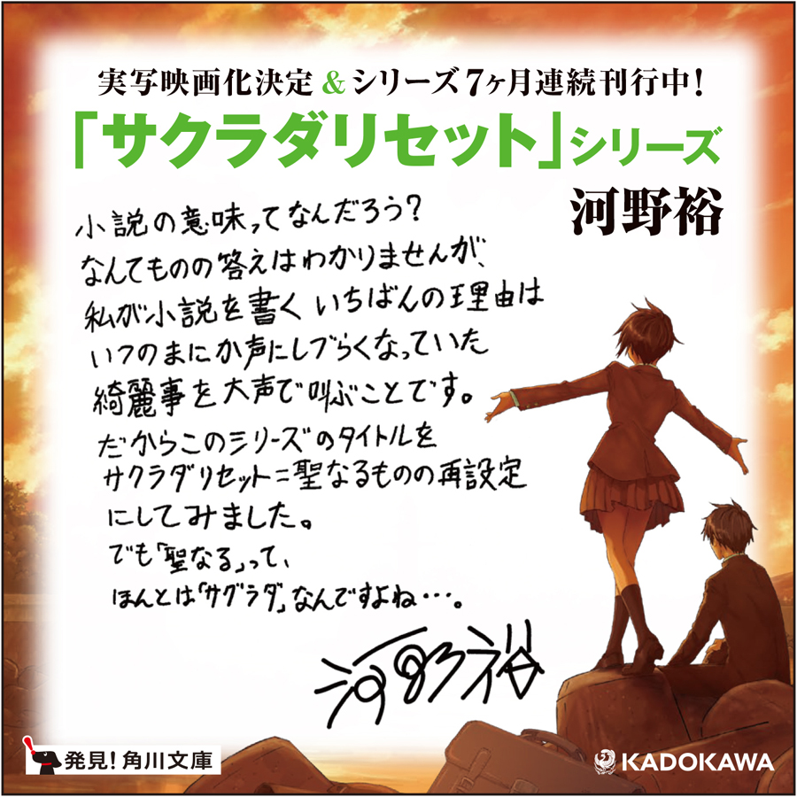
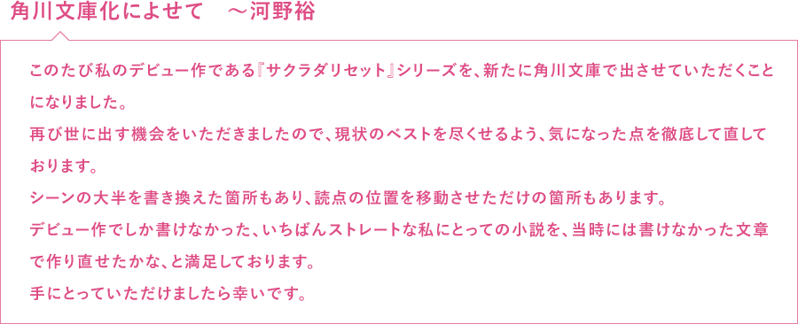
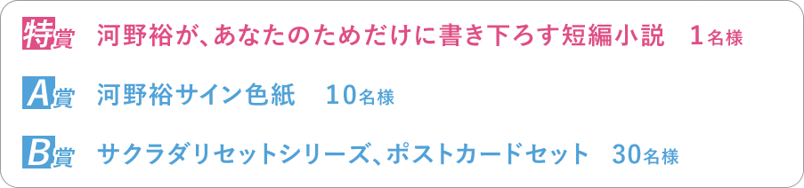
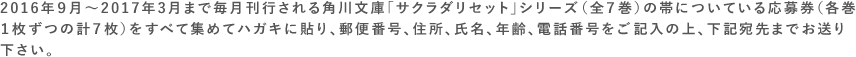
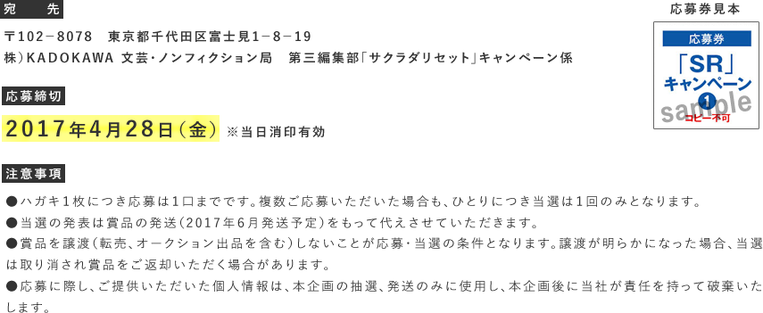

2016/11/09 メディア情報
実写映画版『サクラダリセット』 第2弾キャスト発表！
加賀まりこさん【前篇】、及川光博さん【後篇】ほか、新たな出演キャストが解禁！
詳しい情報は実写映画公式サイトにてご確認ください！
2016/09/23 メディア情報
実写映画化情報解禁！ 野村周平＆黒島結菜、初共演!!
詳細は『サクラダリセット』実写映画公式サイトにてご確認ください！





- 魔女と思い出と赤い目をした女の子
- サクラダリセット２
- 発売日：2016/10/25
- 定価：640円+税/文庫判
ISBN 978-4-04-104189-5-C0193
- 管理局に呼び出され、魔女と名乗る謎の女性に会うことになったケイと美空。
その女性は、能力者の街・咲良田の未来を長年監視していた。一方で謎の少女がケイたちの周辺に現れる。
彼女の目は赤く輝いていた……。
- ※本作は2010年2月に角川スニーカー文庫より刊行された
『サクラダリセット WITCH, PICTURE and RED EYE GIRL』を加筆・修正し、改題したものです。
- 猫と幽霊と日曜日の革命
- サクラダリセット１
- 能力者が集う街、咲良田（さくらだ）。
浅井ケイは、記憶の保持する能力をもっや高校一年生。
春埼美空は、「リセット」――世界を三日分擬似的に巻き戻す能力を持っており、ケイの指示で発動する。
高校の「奉仕クラブ」に所属する彼らは、ある日「死んだ猫を生き返らせてほしい」という依頼を受けるのだったが……。
- ※本作は2009年６月に角川スニーカー文庫より刊行された
『サクラダリセット CAT,GHOST and REVOLUTION SUNDAY』を加筆・修正し、改題したものです。
本を購入する
電子書籍を購入する
「猫と幽霊と日曜日の革命 サクラダリセット１」試し読み


徳島県出身。グループSNE所属。
2009年に『サクラダリセット CAT,GHOST and REVOLUTION SUNDAY』（角川スニーカー文庫）でデビュー。
『いなくなれ、群青』（新潮文庫nex）で、2015大学読書人大賞を受賞。
他著作に、『ベイビー、グッドモーニング』（角川スニーカー文庫）、「つれづれ、北野坂探偵舎」シリーズ（角川文庫）、『いなくなれ、群青』を含む、「階段島」シリーズ（新潮文庫nex）などがある。
今、最も期待される若手作家。





{kind=link}
{kind=link}